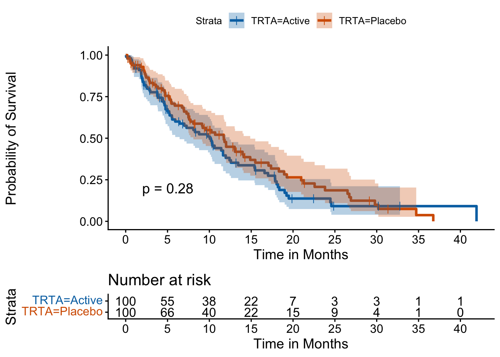

Efficacy TFLs: Survival Analysis and Kaplan-Meier Plots using {survival} and {survminer}
Efficacy
Survival
ggplot2
Clinical
How to fit Cox Proportional Hazard models and draw beautiful Kaplan-Meier curves natively in R without SAS LIFETEST.
Author
Harsh Verma
Published
March 18, 2026
The Efficacy Endpoint: Time-to-Event
In oncology trials, the primary efficacy endpoint is often a time-to-event variable, such as Overall Survival (OS) or Progression-Free Survival (PFS).
In SAS, analyzing these endpoints generally requires two heavy-hitting procedures: PROC LIFETEST (for generating Kaplan-Meier curves and Log-Rank tests) and PROC PHREG (for Cox Proportional Hazards modeling).
In R, the standard isn’t just “good enough”—it’s the industry standard across all academic statistics. We use the {survival} package, authored originally by Terry Therneau (who literally wrote the book on modeling survival data). We pair it with {survminer} for publication-ready graphics.
Fitting the Model
Let’s assume our ADSL dataset contains AVAL (time in months to event) and CNSR (censor flag). Note: In {survival}, the censor indicator needs to be formulated as Event = 1 (Dead), Censor = 0 (Alive), whereas SAS sometimes defaults to the opposite.
library(dplyr)library(survival)
Warning: package 'survival' was built under R version 4.4.3
# Simulated ADTTE (Time to Event) datasetadtte <-data.frame(USUBJID =1:200,TRTA =sample(c("Placebo", "Active"), 200, replace =TRUE),AVAL =rexp(200, rate =0.1), # Simulated survival timeCNSR =sample(c(0, 1), 200, replace =TRUE, prob =c(0.7, 0.3)) # 0 = event, 1 = censored)# Convert SAS CNSR (1=Censored, 0=Event) to R Status (0=Censored, 1=Event)adtte <- adtte %>%mutate(STATUS =if_else(CNSR ==0, 1, 0))# 1. Create the Survival Objectsurv_obj <-Surv(time = adtte$AVAL, event = adtte$STATUS)# 2. Fit the Kaplan-Meier modelkm_fit <-survfit(surv_obj ~ TRTA, data = adtte)# 3. Fit a Cox Proportional Hazards Model (for Hazard Ratio)cox_fit <-coxph(surv_obj ~ TRTA, data = adtte)# Output summarysummary(cox_fit)
Call:
coxph(formula = surv_obj ~ TRTA, data = adtte)
n= 200, number of events= 140
coef exp(coef) se(coef) z Pr(>|z|)
TRTAPlacebo -0.1843 0.8317 0.1705 -1.081 0.28
exp(coef) exp(-coef) lower .95 upper .95
TRTAPlacebo 0.8317 1.202 0.5954 1.162
Concordance= 0.532 (se = 0.024 )
Likelihood ratio test= 1.17 on 1 df, p=0.3
Wald test = 1.17 on 1 df, p=0.3
Score (logrank) test = 1.17 on 1 df, p=0.3
The output of summary(cox_fit) provides the Hazard Ratio (exp(coef)), the confidence intervals, and the p-values immediately. You can easily extract these using the {broom} package to populate your Table 14.2.1.X.
Visualizing the Kaplan-Meier Curve
Now, for the holy grail of oncology TFLs: The Kaplan-Meier Plot.
In SAS, customizing PROC SGPLOT to include a risk table at the bottom, adjusting the censor tick marks, and formatting the p-value text is notoriously finicky.
With {survminer} in R, it is handled automatically through a clean ggplot2 wrapper.
library(survminer)
Warning: package 'ggpubr' was built under R version 4.4.3
ggsurvplot(fit = km_fit,data = adtte,# Styling the Linespalette =c("#0072B2", "#D55E00"), # Colorblind friendlysize =1.2,linetype ="solid",# Censor markscensor =TRUE,censor.shape =124, # Represents a vertical tickcensor.size =3,# Axes & Gridxlim =c(0, max(adtte$AVAL)),break.time.by =5,xlab ="Time in Months",ylab ="Probability of Survival",# Confidence Intervals conf.int =TRUE,# Risk Table at the bottomrisk.table =TRUE,risk.table.height =0.25,risk.table.title ="Number at risk",# Statistical reportingpval =TRUE, # Automatically calculates and prints Log-rank p-valuepval.coord =c(2, 0.2))

Why this is highly superior for Clinical Trials:
The Risk Table: Adding risk.table = TRUE automatically generates an aligned table beneath the plot showing subjects at risk across the time bins.
Dynamic P-Values: It inherently understands the fitted model (km_fit) and calculates the test statistic dynamically, placing it on the chart.
Themes: It inherits {ggplot2} theming, meaning your company can define a theme_company_km() and apply it globally to all charts.
Next up, we will tackle the visually stunning (and often structurally complex) Waterfall and Spider Plots for solid tumor response (RECIST) criteria!